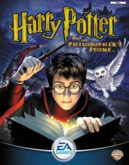
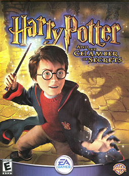
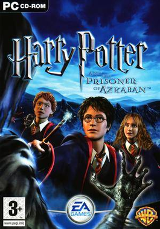
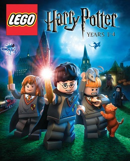

| Harry Potter and the Philosopher's Stone (2001 video game) | |
|---|---|
|  |
Harry Potter and the Philosopher's Stone (released in the United States as Harry Potter and the Sorcerer's Stone) is an action-adventure video game based on the 2001 film of the same name. Philosopher's Stone was initially released for the Game Boy Advance, Game Boy Color, Microsoft Windows, and PlayStation in November 2001. A different game bearing the same name was made two years later for the GameCube, PlayStation 2, and Xbox in December 2003. The versions on different platforms differ greatly from each other and do not follow the same level structures or gameplay, with somewhat varying stories as well. The story follows protagonist Harry Potter, who, after discovering he is a wizard, is sent to Hogwarts School of Witchcraft and Wizardry where he makes friends and receives magical training, and along with his friends stop Lord Voldemort from returning to power. The game received mixed reviews, with critics saying that the game's license would be the only thing to draw in fans. The PlayStation version sold 8 million copies by May 2003, which would become Argonaut's best-selling game and one of the best-selling PlayStation video games of all time. |
| Harry Potter and the Chamber of Secrets (video game) | |
|
Harry Potter and the Chamber of Secrets is an action-adventure video game. It is based on the 2002 film of the same name. The game received positive reviews from critics across all releases of the game. |
 |
| Harry Potter and the Prisoner of Azkaban (video game) | |
|  |
Harry Potter and the Prisoner of Azkaban is a 2004 action-adventure video game. The game is based on the 2004 film of the same name from the Harry Potter franchise. The game was developed by KnowWonder, Griptonite Games, and EA UK each for different consoles and was published by Electronic Arts under the EA Games label. The game was released as a trio, with separate versions for Game Boy Advance, Microsoft Windows, and home consoles (released on PlayStation 2, Xbox, and GameCube). The game received mixed reviews by critics. |
| Hogwarts Legacy | |
|
Hogwarts Legacy is a 2023 action role-playing game developed by Avalanche Software and published by Warner Bros. Games under its Portkey Games label. The game is set in the Wizarding World universe, taking place in the late 1800s, a century before the events of the Harry Potter novels. The player controls a student at the Hogwarts School of Witchcraft and Wizardry who learns to wield different magical abilities and objects, aided by other students and professors, and is involved in uncovering an ancient secret of the wizarding world. |
 |